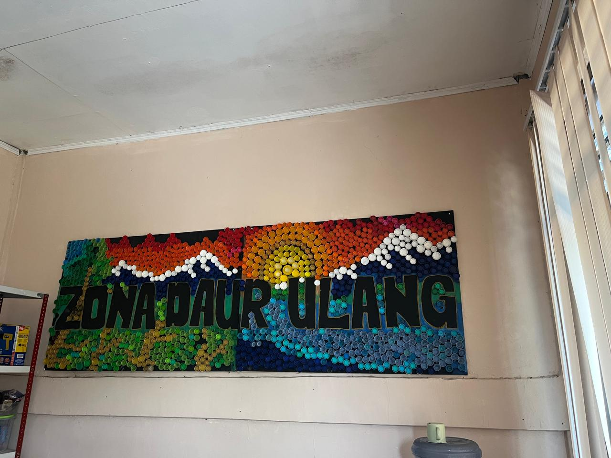
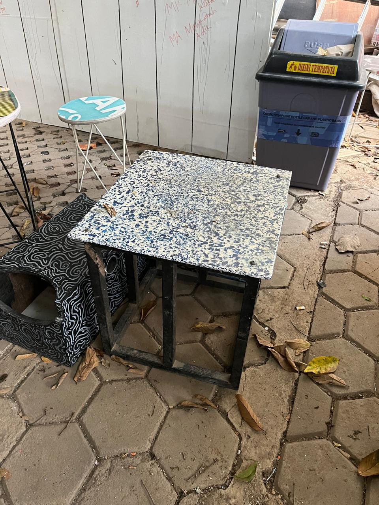
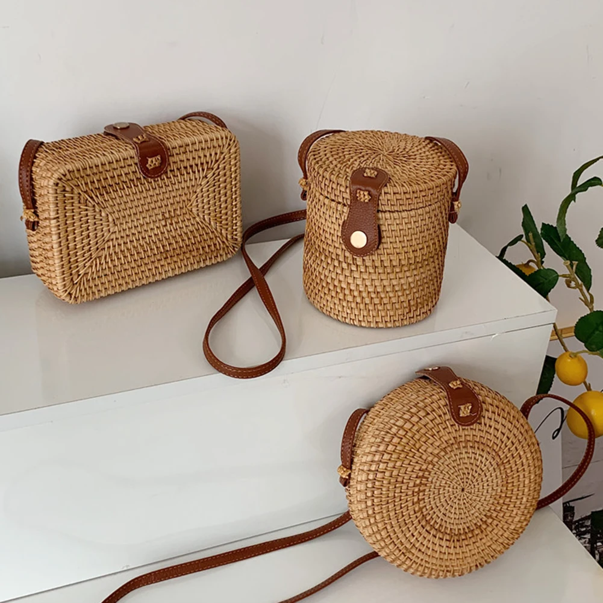

Daftar Barang

Mural Tutup Botol (Custom)
Panorama indah dari tutup botol daur ulang, pesan kuat tentang keberlanjutan.
Rp100.000
Dekorasi dinding unik yang dirangkai dari tutup botol daur ulang yang dapat dicustom langsung oleh anda.
Order

Set Meja Kursi
Furniture ramah lingkungan dari plastik daur ulang, kokoh & estetik.
Rp300.000
Terbuat dari plastik daur ulang yang diolah dengan teknik khusus sehinga menghasilkan furniture kokoh, estetik dan tahan lama untuk penggunaan dalam maupun luar ruangan.
Order

Tas Anyaman
Tas handmade dari serat alami, modis sekaligus ramah lingkungan.
Rp40.000
Tas handmade yang dibuat dari serat kuat, tahan lama dan ramah lingkungan. cocok digunakan sehari-hari.
Order